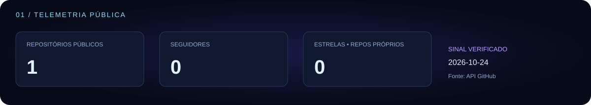
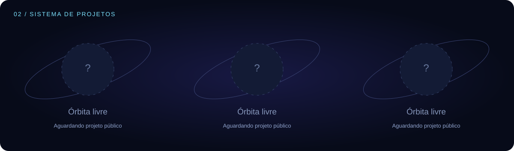

PRÉVIA LOCAL · NADA PUBLICADO · 2026-10-28T07:21:50.397Zkinm-LC · Orbital




Ainda não há projetos públicos próprios para exibir.
Explorar repositórios
Mesmos SVGs do README. A interface do GitHub pode alterar largura, cache e reprodução de animações. O cometa é decorativo.